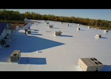
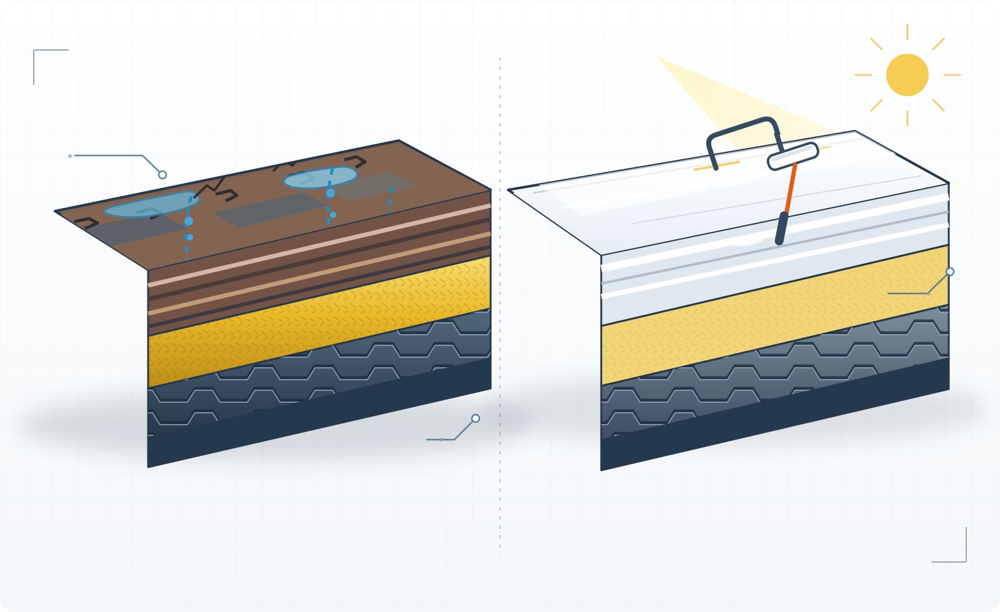

New York City
Use the current NYC Energy Conservation Code and associated commercial provisions.
Compare a repair-as-needed baseline with restoration and replacement scenarios for commercial properties in New York, New Jersey, and Connecticut. Enter your own estimates, then use the jurisdiction references and evidence checklist to prepare for an inspection and compare written scopes.
Planning worksheet by Maximum Roofing · Updated October 17, 2026. Calculator results are estimates from the values you enter. They are not a bid, engineering assessment, tax opinion, insurance valuation, or guarantee of future performance.

Enter estimates from inspections, contractor proposals, operating records, and your finance team. The model totals initial work plus five years of entered repairs and disruption costs. Add energy or insurance savings only when you have a building-specific estimate or written insurer/broker basis. For silicone coating suitability and service details, see our commercial roof coating page.
Enter roof area, annual baseline repairs, and proposal cost per square foot to start. Other missing inputs count as $0.
Shared values are placed in the URL. Do not include confidential information.
How to read this. The baseline is five times your entered annual repair estimate, plus estimated disruption costs if provided. Each option is its entered project cost plus five years of entered post-project repair and disruption estimates, minus only optional annual savings you enter when supported by a building-specific estimate or written insurer/broker information. Exposure value and moisture percentage are context fields and are not treated as expected losses. The model does not determine whether a roof is suitable for restoration or predict its life.
Taxes are not modeled. Repair, maintenance, restoration, and replacement may have different accounting and tax treatment depending on the work and circumstances. Ask your tax adviser. Use roof-specific inspection findings and written proposals to confirm scope and suitability.
Energy and building-code requirements differ between New York City, the rest of New York State, New Jersey, and Connecticut. Confirm the code edition, amendments, existing-building rules, permit date, occupancy, and scope with the local authority and qualified design professional before setting insulation or roof-system assumptions.
Use the current NYC Energy Conservation Code and associated commercial provisions.
New York City has a separate code framework. Check the state code and any more restrictive local standards for the project municipality.
The state’s current code listing identifies the commercial energy subcode as ASHRAE 90.1-2022; confirm adoption and applicability for the permit and project.
NJ Department of Community Affairs · Current Construction Codes
The state lists the 2022 Connecticut State Building Code, based on 2021 International Codes, for applicable permit applications.
This guide does not calculate code compliance. A single R-value or “cool roof” rule should not be assumed to apply across all three states or every roof project.
These are source-published planning figures, not Maximum Roofing prices, project records, or guaranteed bids. The publishers use different scopes; do not average the ranges. They are New York references and do not establish rates for New Jersey or Connecticut.
| System / scope | Published estimate | Source assumption | Source |
|---|---|---|---|
| TPO, no added insulation | $5.45–$6.40/sq. ft. | Roof Observations model; 25,000 sq. ft.; $1.50/sq. ft. tear-off/disposal included per source | Roof Observations |
| TPO with R-30 | $12.55–$17.60/sq. ft. | Same modeled scenario; tear-off/disposal included per source | Roof Observations |
| EPDM, no added insulation / with R-30 | $5.80–$6.70 / $12.85–$17.95/sq. ft. | Same modeled scenario; tear-off/disposal included per source | Roof Observations |
| Modified bitumen, 2-ply no added insulation / R-30 2- or 3-ply | $10.95–$11.60 / $20.10–$24.30/sq. ft. | Same modeled scenario; tear-off/disposal included per source | Roof Observations |
| PVC, no added insulation / with R-30 | $7.05–$7.35 / $17.25–$18.50/sq. ft. | Same modeled scenario; tear-off/disposal included per source | Roof Observations |
| Standing seam with R-30 | $15.30–$25.50/sq. ft. | Same modeled scenario; no comparable no-added-insulation rate shown | Roof Observations |
| Queens published ranges: TPO / EPDM / modified bitumen / BUR / PVC | $10–$14 / $8–$12 / $9–$13 / $11–$16 / $12–$18 per sq. ft. | FlatMasters NY states roof removal is excluded; tear-off separately $2–$4/sq. ft. | FlatMasters NY |
| NYC / Long Island: TPO / EPDM / modified bitumen / standing seam | $8–$15 / $8–$15 / $5–$12 / $13–$25 per sq. ft. | Elite Roofing NY lists tear-off/disposal separately at $1.50–$3/sq. ft. | Elite Roofing NY |
| NYC published ranges: TPO / EPDM / 2-ply torch-down | $9–$16 / $8–$15 / $8–$18 per sq. ft. | MGR Restoration lists tear-off at $2–$5 and insulation upgrades at $2–$8/sq. ft. separately | MGR Restoration |
| Silicone coating restoration | $3.50–$7/sq. ft. | Published NYC estimate; restoration, not replacement. Preparation and roof condition affect scope. | NYC Renovators |
Not Maximum Roofing pricing. The values above are third-party published estimates or a modeled scenario. They are not bids, verified paid costs, or Maximum Roofing project records. The snapshot does not provide a comparable general overlay rate. Ask each contractor to state tear-off or recovery, disposal, insulation, cover board, flashing, drainage, deck repairs, access, permits, and warranty scope.
A repeatable record helps owners, facility teams, contractors, and consultants discuss the same roof conditions. Arrange safe access and use inspection methods appropriate to the roof assembly.

| Observation | Record | Questions for follow-up |
|---|---|---|
| Membrane blistering, open seams, or delamination | Location, extent, close photographs with scale, membrane type if known, and whether the area changes after weather. | Is the condition isolated or widespread? What do the surrounding layers and seams show? |
| Cracking or surface wear on built-up / modified-bitumen roofing | Photo and roof-plan location; note whether reinforcement or underlying layers appear exposed. | Does the finding require a closer assessment or a core sample? Is the deck condition known? |
| Standing water or drainage concern | Drain and overflow locations, approximate ponding boundaries, photos, and time observed after rainfall. | Could blocked drains, low areas, insulation, slope, or deck conditions contribute? Check applicable warranty documents. |
| Suspected wet insulation or interior moisture | Interior leak locations, dates, weather, thermal images if taken, and any test method or report. | What method was used, what did it measure, and where should findings be confirmed by targeted investigation? |
| Flashing, curbs, penetrations, and roof edges | Photos of transitions, equipment, nearby seams, previous patches, and any recent rooftop work. | Are details compatible with the existing system and the proposed repair or restoration scope? |
Thermal images, moisture surveys, electronic leak detection, and core samples have different purposes and limits. A test result should be interpreted with its method, conditions, roof assembly, and inspection scope documented.
Ask which defect is being addressed, what nearby materials were inspected, and whether recurring leaks suggest a wider issue. Record any temporary measure separately from permanent work.
Ask whether the existing roof is suitable, how moisture and damaged areas will be evaluated, what repairs and preparation are included, and which product and warranty conditions apply.
Compare removal, disposal, substrate and insulation assumptions, drainage, flashing, edges, penetrations, access, occupied-space protection, and how concealed conditions are handled.
Separate quoted project costs from estimates for future repairs, disruption, energy, financing, and tax. Identify who supplied each assumption and how uncertain it is.
The PDF includes the evidence matrix, option-comparison questions, and handover checklist. Use the online calculator above for live scenario estimates.
PDF · printable field and planning reference
This guide is provided by Maximum Roofing for general planning. It is not a forensic protocol or engineering report, and no external Creative Commons license is asserted.
Share the roof area, known system, leak history, inspection records, and the scope you are comparing. This planning resource covers New York, New Jersey, and Connecticut; contact Maximum Roofing to confirm service availability for your property. See our commercial roofing page for currently listed service areas.
Prices in these answers are published third-party New York estimates from the source links; they are not Maximum Roofing quotes. Each range retains its source assumptions. The figures do not establish pricing in New Jersey or Connecticut.
No. It models costs from values entered by the user and does not produce a site-specific quote or determine roof suitability.
No. Code requirements vary by jurisdiction, project scope, permit date, and building conditions. Check the applicable authority and qualified design professional.
No. Enter savings only when supported by building-specific estimates or written information from the relevant professional, utility, insurer, or broker.
The Roof Observations New York model lists $5.45–$6.40 per sq. ft. for TPO with no added insulation, in its 25,000-sq.-ft. scenario. The source states that $1.50/sq. ft. for tear-off and disposal is included. This is a modeled third-party estimate, not a Maximum Roofing price. Roof Observations source.
It lists $12.55–$17.60 per sq. ft. for the R-30 scenario, with tear-off and disposal included as stated by the source. It is not a code determination or a company quote. Roof Observations source.
FlatMasters NY lists $10–$14 per sq. ft. for TPO and states that removal is excluded; it lists tear-off separately at $2–$4 per sq. ft. Confirm the scope directly with the source and compare it with the written proposal. FlatMasters NY source.
Elite Roofing NY lists $8–$15 per sq. ft. for TPO/EPDM systems and lists tear-off/disposal separately at $1.50–$3 per sq. ft. These are that publisher’s figures, not verified Maximum Roofing project costs. Elite Roofing NY source.
MGR Restoration lists $9–$16 per sq. ft. for TPO, with tear-off separately listed at $2–$5 and insulation upgrades at $2–$8 per sq. ft. The source’s scope should be checked before comparison. MGR Restoration source.
The Roof Observations New York model lists $5.80–$6.70 per sq. ft. for EPDM without added insulation; its described scenario includes $1.50/sq. ft. tear-off and disposal. It is a third-party model, not a local bid. Roof Observations source.
It lists $12.85–$17.95 per sq. ft. in its R-30 scenario, with tear-off/disposal included as stated by the source. Actual assemblies and proposals can differ. Roof Observations source.
FlatMasters NY lists $8–$12 per sq. ft. and states that roof removal is excluded; its separately listed tear-off range is $2–$4 per sq. ft. FlatMasters NY source.
Elite Roofing NY lists $8–$15 per sq. ft. for TPO/EPDM and separately lists $1.50–$3 per sq. ft. for tear-off/disposal. Treat the figures as source-specific estimates. Elite Roofing NY source.
MGR Restoration lists $8–$15 per sq. ft. for EPDM; its guide separately lists tear-off at $2–$5 and insulation upgrades at $2–$8 per sq. ft. MGR Restoration source.
The Roof Observations New York model lists $10.95–$11.60 per sq. ft. for its two-ply APP/SBS scenario without added insulation. The source says its model includes $1.50/sq. ft. for tear-off/disposal. Roof Observations source.
The same model lists $20.10–$24.30 per sq. ft. across its R-30 two-ply and three-ply scenarios. Those are modeled figures and should not be treated as an apples-to-apples quote for every assembly. Roof Observations source.
FlatMasters NY lists $9–$13 per sq. ft. for modified bitumen, with removal excluded and tear-off separately listed at $2–$4 per sq. ft. FlatMasters NY source.
Elite Roofing NY lists $5–$12 per sq. ft. for modified bitumen and separately lists tear-off/disposal at $1.50–$3 per sq. ft. Confirm product, ply count, and included scope before comparing. Elite Roofing NY source.
MGR Restoration lists $8–$18 per sq. ft. for two-ply torch-down and lists tear-off separately at $2–$5 per sq. ft. The figure is source-specific and is not a Maximum Roofing rate. MGR Restoration source.
It lists $7.05–$7.35 per sq. ft. for PVC without added insulation in its 25,000-sq.-ft. scenario; the source says its $1.50/sq. ft. tear-off/disposal allowance is included. Roof Observations source.
The model lists $17.25–$18.50 per sq. ft. for PVC with R-30 insulation, with tear-off/disposal included as described by the source. This is not a project-specific specification or bid. Roof Observations source.
FlatMasters NY lists $12–$18 per sq. ft. for PVC and states that roof removal is excluded; the guide lists tear-off separately at $2–$4 per sq. ft. FlatMasters NY source.
No. Its table does not show a comparable no-added-insulation option. It lists $15.30–$25.50 per sq. ft. for standing seam in its R-30 scenario. Roof Observations source.
Elite Roofing NY lists $13–$25 per sq. ft. for standing seam. Confirm panel material, roof pitch, insulation, tear-off, flashing, and other scope in the actual proposal. Elite Roofing NY source.
The price snapshot does not include a standing-seam rate from the Queens guide. Use the specific published ranges elsewhere in the snapshot only with their stated source and scope, or compare written bids.
NYC Renovators publishes an estimate of $3.50–$7 per sq. ft. for silicone coating restoration. It is not a replacement-roof price; preparation, repairs, roof condition, coating requirements, and warranty scope affect suitability and cost. NYC Renovators source.
No. The cited $3.50–$7 per sq. ft. is a published silicone-restoration estimate. The New York price snapshot does not establish a comparable general overlay price, and a coating should not be assumed suitable without project-specific inspection and product requirements. NYC Renovators source.
The snapshot does not provide a verified, comparable New York overlay rate. Ask each bidder to state whether the scope is a recover/overlay or tear-off and replacement, what existing layers remain, and any insulation, deck, and warranty conditions.
FlatMasters NY lists tear-off at $2–$4 per sq. ft., separate from its system ranges. Its listed installation rates exclude removal, so do not add this twice if another quote already includes tear-off. FlatMasters NY source.
Elite Roofing NY lists tear-off/disposal separately at $1.50–$3 per sq. ft. This is one publisher’s estimate; disposal, access, layers, and actual scope may differ. Elite Roofing NY source.
MGR Restoration lists tear-off at $2–$5 per sq. ft. separately from its system ranges. Verify the number of existing layers, disposal, access, and included work before using it in a comparison. MGR Restoration source.
The published New York model says it includes $1.50 per sq. ft. for tear-off and disposal in its 25,000-sq.-ft. scenario. Do not add another tear-off allowance to those modeled figures unless changing the scenario deliberately. Roof Observations source.
MGR Restoration lists an insulation-upgrade range of $2–$8 per sq. ft. Its application depends on the project scope; it is not an independent R-value specification or code recommendation. MGR Restoration source.
The publishers use different assumptions and scopes. The snapshot identifies examples such as tear-off inclusion, insulation, system type, and ply count. Compare the proposal details rather than averaging the separate published figures.
No. These figures are third-party published estimates and a third-party modeled scenario. They are not Maximum Roofing bids, verified paid costs, or project records. Request a project-specific written estimate for company pricing.
They are New York-published references only. The snapshot does not establish equivalent market prices for New Jersey or Connecticut; local labor, code, access, material, and scope should be checked for each project.
No. They are planning references from their respective publishers, not guaranteed prices. Confirm current material, labor, access, tear-off, insulation, repair, and warranty scope with bidders.
Compare the same roof area and system, then list tear-off/recovery, disposal, insulation, cover board, flashing, drainage, deck repairs, access, permits, schedule, and warranty requirements. Record exclusions and allowances beside each total.
Use the calculator to enter the actual written proposal rates and project assumptions. If you test a third-party published range, label it as a scenario and keep its source, included tear-off, insulation assumptions, and date with your notes.
FlatMasters NY lists $11–$16 per sq. ft. for built-up roofing and states roof removal is excluded; the guide separately lists tear-off at $2–$4 per sq. ft. FlatMasters NY source.
Multiply the stated rate by the measured roof area for a rough arithmetic scenario only, then account separately for scope items the source excludes. For example, do not treat a third-party range as a bid or as a total project estimate without confirming area, tear-off, insulation, repairs, access, disposal, and other proposal terms.
Choose a format to copy a citation. Download the BibTeX record for reference managers.